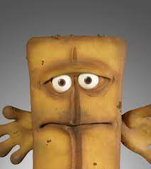

Steckbrief
Persönliche Daten
Bild:

- Name: Bernd Bread
- Geburtsdatum: 02.01.2000
- Geburtsort: Hamburg
Persönliche Daten
- Profil: F Informatik
- Leistungskurs: Informatik und Ernährungswissenschaften
- Lieblingsfach: Darstellendes Spiel
Meine Freizeit
- Hobbys:
- Lieblingsserien:
- Lieblingsbücher:
- Lieblingsessen: